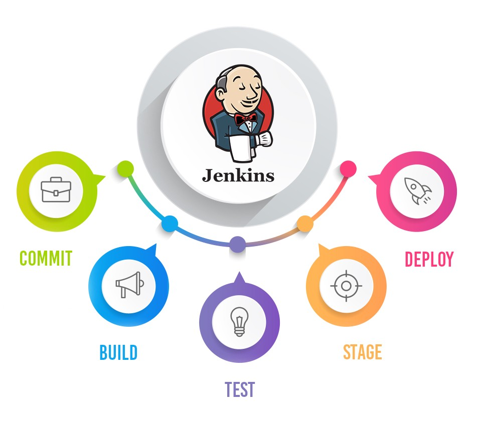

Jenkins Shared Library
Built & mantained Jenkins Shared Library to automate CI CD process.
test
test
test
test.
Technologies:
- - Jenkins
- - Groovy scripted Pipeline
- - GIT
- - Jira
- - SonarQube
- - Nexus
Jenkins CI CD pipeline
